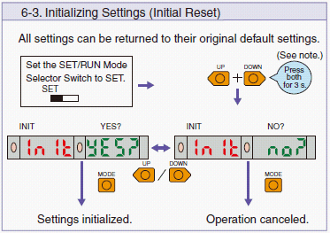
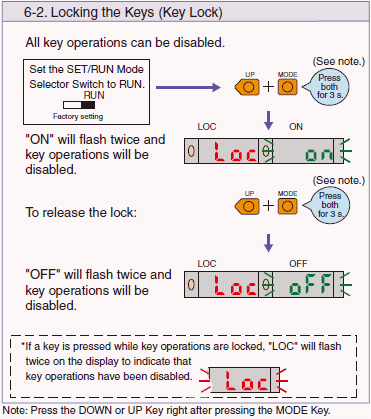
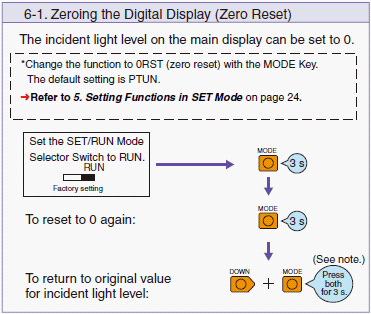
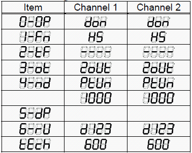

Service History
Subject: SCS - NS-8080 floating senor unable to detect device floating
Handler Model: NS-8080
Controller: RC520
Date: 17 Sep 2009
Symptom
SCS - NS8080 floating senor unable to detect device floating.
Unable to do setting or power tuning.
Action
Resetting(initialise to factory default) of Shuttle 1 Floating sensor amplifier:
-Perform step 6-3 to initialise fiber amplifier, after initialise fiber amplifier, need to set amplifier setting back to EPSON specified setting in "SET" mode for the amplifier.(Refer NS-8000 series User's Manual, Chapter 11 Checking Sensor and Operation)
-If fiber amplifier is locked, perform step 6-2 to unlock
|
 |
 |
|
 |
|
Cause
Remarks
Fiber Amplifier (E3X-MDA) setting for NS-8080 series.
// Function setting //
<1> Set switch to correct Channel(eg Input Shuttle 1 is Channel 1)
<2> Select to [SET] side for [SET/RUN] switch. --> Function setting mode.
<3> Function is changed by [MODE] switch when push it.

Only after Fiber Amplifier setting in "SET" mode is correct then perform Power Tuning.
//Power tuning//
<1> Prepare for power tuning condition
|
Condition |
Output Rotation |
Output Detect |
Output Slit |
Input Detect |
Input Floating |
Input Cross Sensor |
Input Rotation |
|
Device use or Not |
Put Device |
Empty pocket |
Empty pocket |
Empty pocket |
Put Device |
Put Device |
Put Device |
Put Device: Put device into change kit pocket
Empty pocket : No device, change kit pocket is empty
<2> Move Change kit sensing position by hand or use <Maintenance><Controller><Maintenance> function.
Prepare device depends on adjustment location.
<3> Select to [RUN] side for [SET/RUN] switch. ---> Detect mode.(Sensing mode)
<4> Execute "power tuning" by press & hold [MODE] switch for over 3 seconds.
Power tuning starts, release [MODE] switch, power tuning is adjusted automatically.
<5> If fine tuning is needed, threshold can be adjusted by using [UP/DOWN] switch.